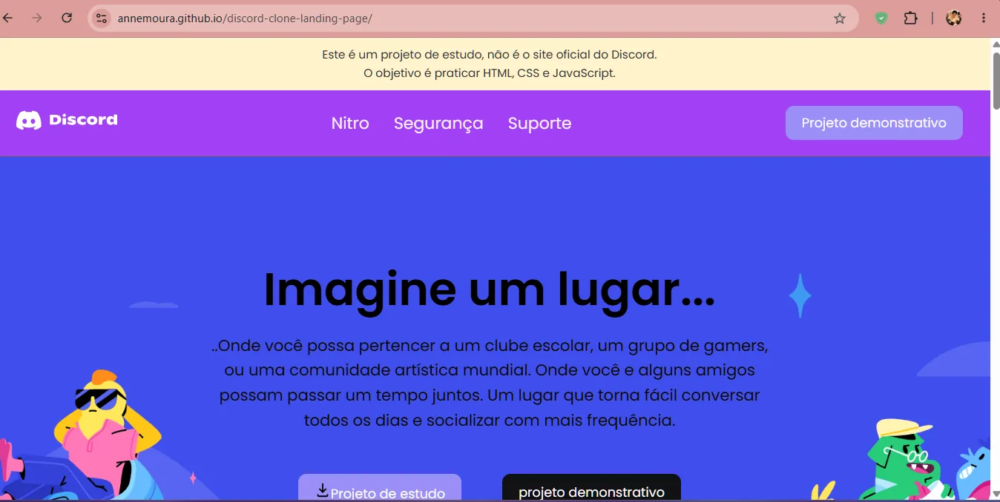
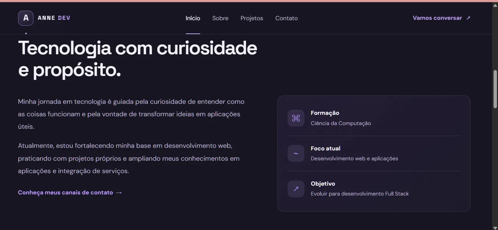

PROJETO AUTORAL
PROJETO AUTORALEM DESENVOLVIMENTO
StudyHub
Plataforma de estudos com organização acadêmica, biblioteca de materiais e assistente de IA para apoiar a aprendizagem.
Conhecer demonstraçãoPORTFÓLIO • DESENVOLVIMENTO WEB
Sou Anne Moura, estudante de Ciência da Computação e desenvolvedora em formação. Crio projetos web enquanto aprofundo meus conhecimentos em tecnologia e programação.
01 / SOBRE MIM
Minha jornada em tecnologia é guiada pela curiosidade de entender como as coisas funcionam e pela vontade de transformar ideias em aplicações úteis.
Atualmente, estou fortalecendo minha base em desenvolvimento web, praticando com projetos próprios e ampliando meus conhecimentos em aplicações e integração de serviços.
Conheça meus canais de contato02 / TECNOLOGIAS
Conhecimentos em evolução, aplicados por meio de prática e construção de projetos.
React, TypeScript, Expo e Supabase estão em desenvolvimento e são explorados em projetos de estudo.
03 / SELEÇÃO
PROJETO AUTORALEM DESENVOLVIMENTO
Plataforma de estudos com organização acadêmica, biblioteca de materiais e assistente de IA para apoiar a aprendizagem.
Conhecer demonstração
LANDING PAGEDESENVOLVIMENTO WEB
Recriação educacional de uma landing page para praticar estrutura semântica, layout e responsividade.
Ver todos os projetos
PORTFÓLIO PESSOALIDENTIDADE PROFISSIONAL
Site responsivo para apresentar minha trajetória, projetos e canais de contato como desenvolvedora.
Visitar portfólioVAMOS CONSTRUIR ALGO?